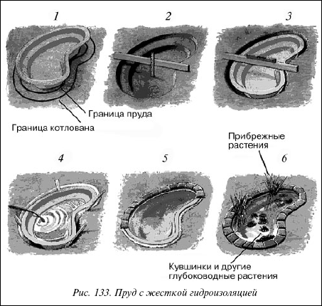

Пруд с жесткой гидроизоляцией.
 Пруд с жесткой гидроизоляцией.
Пруд с жесткой гидроизоляцией.
С появлением в продаже жестких форм из пластмассы с длительным сроком службы, а в том числе и форм, позволяющих создать пруд больших размеров и глубины (более 3,5 м и более 0,5 м соответственно) стало возможным устраивать садовые водоемы в штампованных формах.

Рис. 133. Пруд с жесткой гидроизоляцией
Пластмассовую форму лучше выбирать черного или коричневого цвета и глубиной не менее 0,5 м. Если форма (пруд) черного цвета, в его воде лучше отражается береговая растительность, и он кажется глубоким. Нужно заметить, что, когда пруд установлен и заполнен, он всегда кажется меньше. Это надо учитывать при покупке. Очень важна также водная масса пруда, которая зависит от размера водной поверхности (примерно 350 л воды на 1 м поверхности) и что это соотношение обеспечивает нормальные условия для существования животных и растений. К тому же слишком сильное нагревание воды снижает содержание в ней кислорода.
Строительство водоема1. Обозначить контуры пруда.
2. Выкопать котлован.С помощью лопаты прорубить дерн по линии границы и выкопать котлован. Его дно должно быть примерно на 5 см. глубже дна формы.
3. Поместить форму в котлован.Утрамбуйте почву на дне котлована и засыпьте его слоем песка толщиной 2,5 см. Опустите в него форму и убедитесь, что она установлена горизонтально.
4. Заполните пространство между стенками котлована и формы.
5. Оформление края пруда.Вымостите края пруда плиткой, природным камнем и т. п. так, чтобы они нависали над водой примерно на 5 см. Камни должны быть скреплены известковым раствором.
6. Высадите растения и запустите рыб.Для разведения рыб необходима емкость глубиной от 60 см.
Если все же пруд кажется вам слишком маленьким, его можно расширить с помощью пленки, создав плавный переход к береговой зоне. Готовый пруд и пленка в местах перехода склеиваются силиконовым каучуком.

Как построить Дом ? . E-mail: _pvi@ukr.net
администрация сайта не претендует на их авторство и не несёт ответственности за их содержание.